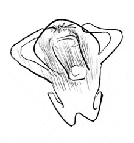

In this example, we use CSS to create a modal (dialog box) that is hidden by default.
We use JavaScript to trigger the modal and to display the current image inside the modal when it is clicked on. Also note that we use the value from the image's "alt" attribute as an image caption text inside the modal.
